Chapter 2 Data Exploration and Visualization
Chapter Overview
An integral part of any predictive analytic exercise is the use of graphical displays to investigate the characteristics of the variables of interest, on their own and in relation to one another, and to visualize the results of the predictive models constructed.
In this regard, one of the key strengths of R as a programming language is that it offers versatile graphing capabilities, both in the base installation and with add-on packages.
With a minimal amount of code, we can produce a wide variety of high-quality graphs. In Exam PA, you will be asked to take advantage of R’s graphing capabilities and make sense of different types of graphical displays.
Instead of using R’s base graphical platform, you will make graphs using the ggplot2 package, which may be new to you even if you have used R before. Compared to R’s base graphics system, ggplot2 involves vastly different syntax based on the so-called “grammar of graphics” and lends itself to producing sophisticated graphs that would be cumbersome to create using the base R graphics.
In section 2.1, we will learn the basic structure of a ggplot, make some simple but informative plots, and learn how to tweak the appearance of a ggplot.
Section 2.2 draws upon the data visualization techniques covered in Section 2.1 to perform exploratory data analysis (EDA), which is the use of graphs and summary statistics to uncover patterns and relationships in a set of data, and generate hypotheses which can be answered quantitatively in a predictive model at a later stage.
2.1 Making ggplots
2.1.1 Basic Features
Let’s begin by installing and loading the ggplot2 package:
With the last command, we can use all the functions in the ggplot2 package until the end of the current R session.
Skeleton: In its simplest form, a ggplot consists of two parts: The core ggplot() function and a chain of additional functions pasted together using the plus (+) sign defining the exact type of plot to be made.
ggplot()function: The \(\boxed{ggplot()}\) function initializes the plot, defines the source of data using thedataargument (almost always a data frame), and, most importantly, specifies what variables in the data are “mapped” to visual elements in the plot by the mapping argument. Mappings in ggplot are specified using the \(\boxed{aes()}\) function, withaesstanding for “aesthetics”. They determine the role different variables play in the plot. The variables may, for instance, correspond to visual elements such as the x- or y-variables, color, size, and shape, specified by thex, y, color, size, and shapeaesthetics, respectively.geom_()functions: Subsequent to theggplot()function, we put in geometric objects, or geoms for short, which include points, lines, bars, histograms, box-plots, and many of other possibilities, by means of one or more geom functions. Placed layer by layer, these geoms determine what kind of plot is to be drawn and modify its visual characteristics, taking the data and aesthetic mapping specified in theggplot()function as inputs.
Here is the generic structure of a ggplot (The uppercase letters are placeholders.):
ggplot(data = DATA, mapping = aes(AESTHETIC_1 = VARIABLE_1,
AESTHETIC_2 = VARIABLE_2,
...)) +
geom_TYPE(...) +
geom_TYPE(...) +
OTHER_FUNCTIONS +
...Case Study: Personal Injury Insurance Data set
To illustrate data visualization and exploration techniques, in this chapter we will look at a personal injury insurance data set. This data set contains the information of 22,036 settled personal injury insurance claims. These claims were reported during the period from July 1989 to the end of 1999, with claims settled with zero payment excluded. The variables in the data set are described in Table 2.1.
| Variable | Description |
|---|---|
| amt | Settled claim amount (continuous numeric variable) |
| inj | Injury code, with seven levels: 1 (no injury), 2, 3, 4, 5, 6 (fatal), 9 (not recorded) |
| legrep | Legal representaytion (0 = no, 1 = yes) |
| op_time | Operational time (a standardized amount of time elapsed between the time when the injury was reported and the time when the claim was settled) |
In Section 4.2, we will build a model to predict the size of personal injury insurance claims using the other variables in the data set. For now, we will perform data exploration of the variables in the data set. The insights we gain here will go a long way towards constructing a good predictive model.
persinj <- read.csv("data/persinj.csv")
# Take out a subset of 50 observations from the full set of data
persinj50 <- persinj[seq(1, nrow(persinj), length = 50), ]
persinj50
#> amt inj legrep op_time
#> 1 87.75 1 0 0.1
#> 450 195.60 1 0 1.9
#> 900 6777.93 1 1 3.8
#> 1350 8738.44 1 0 5.7
#> 1799 3555.73 6 0 7.5
#> 2249 5158.06 2 0 9.4
#> 2699 5612.93 1 1 11.2
#> 3148 8994.05 1 0 13.1
#> 3598 1570.34 1 1 14.9
#> 4048 5735.00 1 0 16.8
#> 4497 15702.67 1 0 18.7
#> 4947 15602.52 1 1 20.6
#> 5397 5445.00 1 1 22.5
#> 5847 32935.42 1 1 24.4
#> 6296 2568.08 1 1 26.3
#> 6746 9349.03 1 0 28.2
#> 7196 2726.51 1 0 30.0
#> 7645 10907.30 2 0 31.8
#> 8095 25149.49 2 1 33.8
#> 8545 11683.60 1 0 35.7
#> 8994 12800.75 1 1 37.6
#> 9444 13500.00 1 1 39.4
#> 9894 1742.62 9 0 41.2
#> 10343 24373.94 1 0 43.1
#> 10793 21907.70 1 1 45.0
#> 11243 47229.71 1 1 46.8
#> 11693 2562.70 1 0 48.6
#> 12142 15459.63 1 1 50.5
#> 12592 42720.13 2 0 52.4
#> 13042 16163.86 1 1 54.3
#> 13491 15446.68 1 0 56.2
#> 13941 174364.45 2 1 58.1
#> 14391 10838.48 1 1 60.0
#> 14840 6500.00 1 1 61.9
#> 15290 36577.13 4 0 63.9
#> 15740 126588.00 1 1 65.7
#> 16189 35599.60 1 1 67.7
#> 16639 48254.71 1 1 69.7
#> 17089 65178.91 1 1 71.8
#> 17539 24684.92 1 1 73.9
#> 17988 578733.84 2 1 75.8
#> 18438 72916.85 1 1 77.7
#> 18888 52935.50 1 0 79.6
#> 19337 71392.93 3 1 81.6
#> 19787 107462.51 1 1 83.8
#> 20237 166986.28 2 1 86.0
#> 20686 15605.74 1 0 88.3
#> 21136 102440.48 2 1 90.8
#> 21586 204022.11 3 1 93.8
#> 22036 117562.73 1 1 99.1As our first example, let’s make a scatterplot for the two numeric variables in the persinj50 data, amt and op_time. The plot, produced by the code below is given in Figure 2.1.1. The code obeys the two-part structure discussed earlier:
ggplot()function: The first line makes it clear that we are using thepersinj50data, where the variablesop_timeandamtare mapped to the variables on the x-axis and y-axis through the x and y aesthetics, respectively. There is no need to name the variables as persinj50%op_time or persinj50$amt as the data source is already specified in the data argument.Geom: Given these mappings, we use the \(\fbox{geom_point()}\) to make a scatterplot ofamt(the y-variable) againstop_time(the x-variable). The plot comprises 50 points corresponding the the 50 paired values of the two variables and allows us to see the two variables in comparison with each other.
Later, we will fine-tune this plot in different ways to capture different sorts of information.
ggplot(data = persinj50, mapping = aes(x = op_time, y = amt), caption="A basic scatterplot of `amt` against `op_time` in the `persinj50` dataset.") +
geom_point(color = "blue")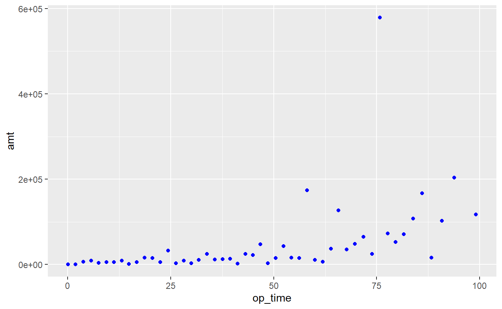
Now let’s see an example of using the color aesthetic correctly. In the persinj50 data, the legrep variable is a binary variable equal to 1 for injuries with legal representation and 0 for those without.
To color the different injuries according to the presence of legal representation, we map the color aesthetic to legrep treated as a factor.
The resulting scatterplot, generated by the code below is provided, where injuries without legal representation (legrep = 0) are displayed in red whereas those with legal representation (legrep = 1) are displayed in teal. A legend is produced accordingly.
Notice that there is a genuine mapping between the legrep variable and color, with legrep = 0 mapped to the red color and legrep = 1 mapped to the teal color. In other words, the observations are differentiated on the basis of the legrep variable by color.
ggplot(data = persinj50, mapping = aes(x = op_time, y = amt, color = factor(legrep))) +
geom_point()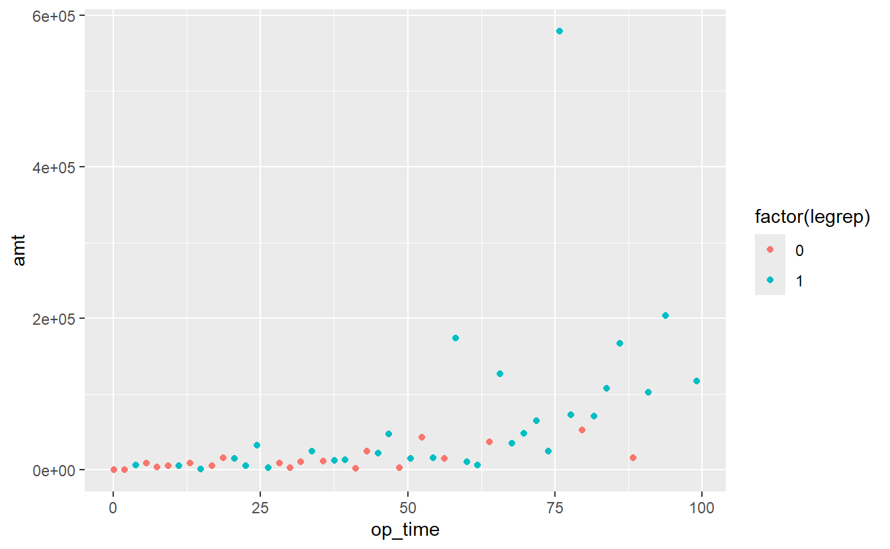
Important Geoms for Exam PA
| Geom | GraphType | Arguments |
|---|---|---|
| geom_bar() | Bar chart | fill, alpha |
| geom_boxplot() | Boxplot | fill, alpha |
| geom_histogram() | Histogram | fill, alpha, bins |
| geom_point() | Scatterplot | color, alpha, shape, size |
| geom_smooth() | Smoothed Curve | color, fill, method, se |
We will illustrate the use of geom_bar(), geom_boxplot(), and geom_histogram() in Section 2.2. For now, let’s continue with the scatterplots we have just produced and make them more informative.
In the next figure, we plot 50 observations in the persinj50 data set using large points (size = 2) and a small amount of transparency (alpha = 0.5), classify them according to whether they have legal representation or not, and fit a separate smoothed curve to each kind of injuries via the geom_smooth() function. The commands are collected in the next code chunk:
ggplot(data = persinj50, mapping=aes(x=op_time, y=amt, color=factor(legrep), fill=factor(legrep))) +
geom_point(size=2, alpha=0.5) +
geom_smooth()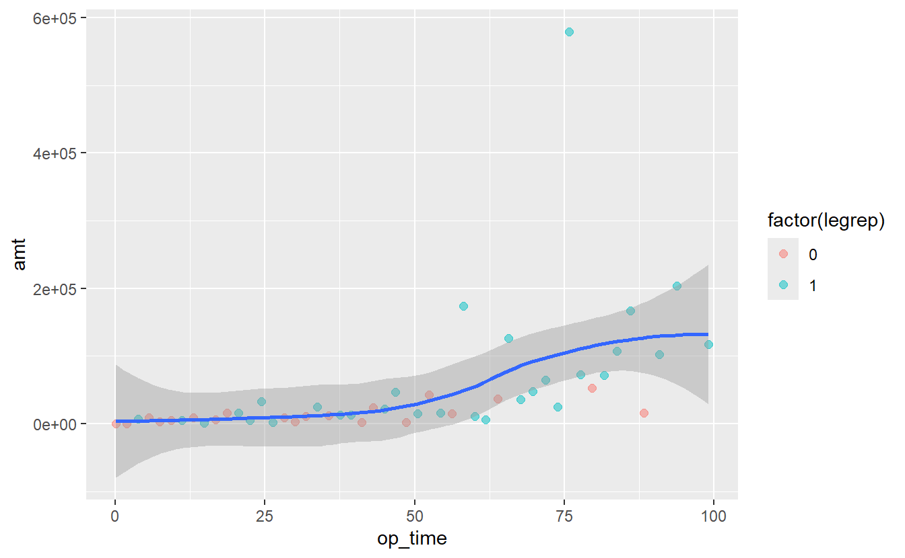
To make a single smoothed line for all data points, but leave the coloring of points by legrep, move the color aesthetic to the geom_point() function.
ggplot(persinj50, aes(x = op_time, y = amt)) +
geom_point(aes(color = factor(legrep)), size = 2, alpha = 0.5) +
geom_smooth()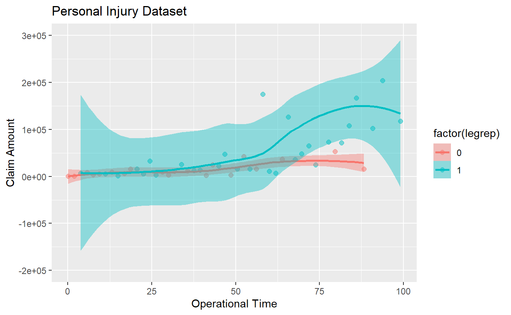
Faceting
\(\fbox{Faceting}\) is another useful way to categorize our data into distinct groups. While grouping showcases two or more groups of observations in a single plot, faceting displays the observations in separate plots (known as a “small multiple” plot) produced for each value of the faceting variable placed side-by-side, usually on the same scale, to facilitate comparison.
2.2 Data Exploration
In this section, we will apply our data visualization techniques to perform Exploratory Data Analysis (EDA), which is an indispensable part of any predictive modeling exercise.
EDA is an integral part of predictive modeling because it serves two important purposes:
Data Validation: It allows us to perform commonsense checks and identify nonsensical data values (e.g., a negative value for age, which is impossible), which are potential data errors that may lead to unreasonable model results and should be fixed. After inappropriate data values have been removed, the data becomes ready for analysis.
Characteristics of Variables: EDA helps us understand the key characteristics of the variables in the data. Such an understanding may suggest useful ways to pre-process the variables to improve the predictive performance and interpreteability of the models we will construct, and, most importantly, decide on an appropriate type of predictive model that is likely to meet our business needs.
Typically, EDA is accomplished by a combination of two kinds of tools:
- Descriptive Statistics (Summary Statistics)
- Purpose: Quickly summarize different distributional properties of the variable(s) of interest.
- Examples: Mean, Variance, Mode, Correlation, Table of Frequency Counts
- Graphical Displays (Visual Displays)
- Purpose: Allows us to get a quick impression of the overall distribution of the variable(s) of interest.Graphs are often more informative than a table of summary statistics and sometimes can reveal information that would be missed otherwise, such as the presence of outliers.
- Examples: Histograms, Box Plots, Bar Charts, and associated variants.
In this section, we will return to the full persinj data (with 22,036 observations) and use it to illustrate the creation and interpretation of descriptive statistics and graphical displays.
2.2.1 Univariate Data Exploration
Let’s begin with univariate data exploration – exploration that sheds light on the distribution of only one variable at a time.
The specific statistics and graphical tools will depend on whether the variables you are analyzing are numeric or categorical.
Numeric Variables
Descriptive Statistics: Statistical summaries are mainly used to reveal two aspects of the distribution of a numeric variable:
- Central Tendency: The central tendency of a numeric variable, whether it be continuous or discrete, is often quantified by its mean and median. These two metrics capture the typical “size” of the variable and can be readily produced in R by applying the \(\fbox{summary()}\) function to the variable of interest.
- Dispersion: Common measures of dispersion include variance, standard deviation and interquartile range (IQR) (defined as the difference between the 75% quantile and the 25% quantile of a variable(, all of which measure how spread out the values of the numeric variable are over its range.
Graphical Displays: To visualize the distribution of numeric variables, histograms and box-plots are convenient graphical aids.
Histograms divide the observations into several equally spaced bins (or buckets) and provide a visual summary of the count or relative frequency in each bin, allowing us to learn about the overall shape of the distribution of a numeric variable and where most observations lie.
box-plots visualize the distribution of numeric variables by placing its 25% quantile, the median, and 75% quantile in a “box”, with the rest of the data points constituting the “whiskers”.
The amount of spacing between different parts of a boxplot reflects the degree of dispersion and skewness of the variable’s distribution.
“Outliers”, defined here as data points that are above or below 1.5 times the interquartile range from either edge of the box, are shown as large dotted points.
While box-plots do not directly show the actual shape of the variable’s distribution, they offer a useful graphical summary of the key numeric statistics and allow for a visual comparison of the distributions of different numeric variables (e.g., the relative magnitude of their median and dispersion) or the distribution of the same numeric variable across different levels of another categorical variable.
Summary Statistics
In the persinj data, there are two numeric variables, amt and op_time. In the following code, we focus on the amt variable for the purposes of illustration and apply the summary() function to the amt variable:
# Reload the data
persinj <- read.csv("data/persinj.csv")
# Print a summary of the `amt` variable
summary(persinj$amt)
#> Min. 1st Qu. Median Mean 3rd Qu. Max.
#> 10 6297 13854 38367 35123 4485797When the summary() function is applied to a numeric variable, a six-number “summary” is produced.
Based on the summary output, we make the following observations:
The mean of claim amount (38,367) is way higher than its median (13,854) and the 75th percentile is much further away from the median than the 25th percentile, indicating that the distribution of claim amount is highly skewed to the right.
The right skew suggests that the values to the right of the mean of claim amount tend to be further away from the mean than those to the left, so there is a heavy tail that extends to the far right.
The largest claim amount, 4,485,797, is almost an astronomical figure compared with the mean or median.
In the following exercise, you will calculate the summary statistics for the two groups of injuries classified by legal representation, which is a binary categorical variable. Doing so helps us understand the effect of legal representation on claim amount.
Exercise 2.2.2 - Calculating the summary statistics for two groups of observations
Write R code to calculate the summary statistics for claim amount separately for injuries with legal representation and those without legal representation. Comment on the central tendency and dispersion of claim amount of these two groups of injuries.
Solution: To extract the two groups of injuries, we can use the method of logical sub-setting to split the data set into two subsets.
- A subset called
persinj.0corresponding to injuries without legal representation (legrep= 0). - A subset called
persinj.1corresponding to injuries with legal representation (legrep= 1).
Then we look at the summary statistics of the claim amount variable within the two subsets.
persinj.0 <- persinj[persinj$legrep == 0, ]
persinj.1 <- persinj[persinj$legrep == 1, ]
summary(persinj.0$amt)
#> Min. 1st Qu. Median Mean 3rd Qu. Max.
#> 10 4061 11164 32398 29641 2798362
summary(persinj.1$amt)
#> Min. 1st Qu. Median Mean 3rd Qu. Max.
#> 20 7305 15309 41775 38761 4485797
sd(persinj.0$amt)
#> [1] 77820
sd(persinj.1$amt)
#> [1] 97541The comparison is apparent: Claims with legal representation not only are larger on average, but also are more spread out. The relative variability is confirmed when the standard deviations of the two groups of claim amounts are computed by the sd() function.
Histograms
Now we turn to visual representations. In ggplot2, a histogram is constructed by the geom_histogram() function, which only requires the x-aesthetic capturing the numeric variable of interest.
In the next set of code, we make four histograms colored in blue for the claim amount variable with different choices of the \(\fbox{bins}\) parameter, which controls the number of bins in a histogram.
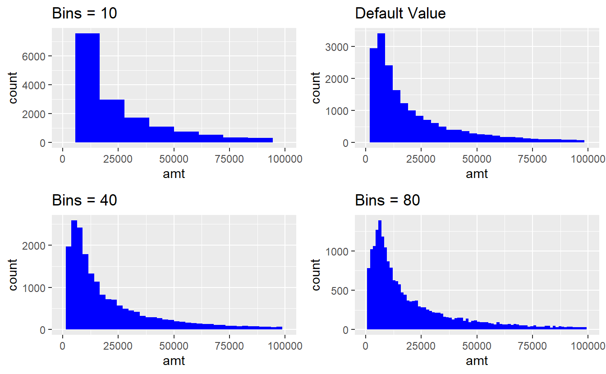
2.2.1.0.1 Problems with Skewed Data and Possible Solutions
In predictive modeling, it is often undesirable to have a right-skewed target variable for two reasons:
- Predictive Power
- The objective of predictive analytics is to study the association between the target variable and predictors in the data over a wide range of variable values.
- If most of the observations of the target variable are concentrated in the small-value range, it will be difficult to investigate the effect of the predictors on the target variable globally, since we simply don’t know enough about the target variable in the right tail.
- The same idea applies to a right-skewed predictor; if a predictor exhibits a heavy right-skew, we are unable to differentiate the observations of the target variable effectively on the basis of the values of the predictor, most of which are concentrated in the small-value range.
- Model Fitting
- A number of predictive models (e.g., linear models, decision trees) are fitted by minimizing the sum of the squared discrepancies between the observed values and predicted values of the target variable.
- If the target variable is right-skewed, then the outliers, or extreme values, will contribute substantially to the sum and have a disproportionate effect (or “leverage”) on the model, which is undesirable unless the right tail is where our main concern lies.
To correct for skewness, we can apply a monotone concave function to shrink the outliers relative to the smaller values and symmetrize the overall distribution.
This will dampen the effects of the extreme values on the model and tend to improve its overall goodness-of-fit than using the original right-skewed variable.
Two commonly used transformations for dealing with right-skewed variables are:
- Log Transformation
- This transformation (typically w.r.t. base e) can be applied as long as the variable of interest is strictly positive. None of the variable values should be zero or negative.
- Square Root Transformation
- Although not discussed in the Exam PA modules, the square root transformation is in a similar spirit to the log transformation, but is applicable even to non-negative variables, some of whose values can be zero.
To see the effects of the log and square root transformations in action, the following code produces a histogram for the log of claim amount and the square root of claim amount.
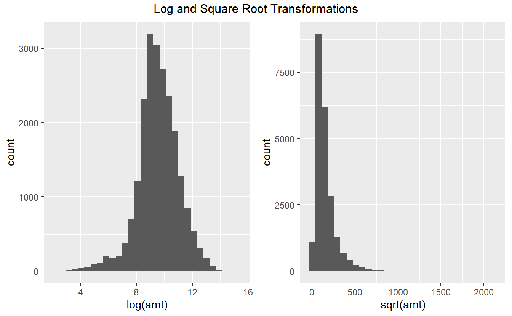
Based on the resulting histograms, we make the following observations:
It is evident that the log transformation has effectively removed the right-skewness of claim amount and made the resulting distribution much more symmetric.
In contrast, the square root of claim amount remains highly right-skewed.
In general, the log transformation does a better job of remedying the right-skewness of a variable than the square root transformation, but it may overdo things and make the transformed variable left-skewed.
Because of the extreme skewness of claim amount in the persisj data, the log transformation is the more appropriate transformation to use and we will adopt it in the rest of this section. We will see that the log transformation makes it much easier to discover relationships between variables.
2.2.1.0.2 Outliers
We mentioned outliers in our discussion of skewed data above. Let’s digress slightly and look at outliers in some greater depth, which were tested in some recent PA exams.
There is no universal quantitative definition of outliers. We generally think of outliers as anomalous data points that substantially differ from the overall pattern of the data and appear to be strange (for categorical variables, observations in sparse factor levels can be considered outliers).
Outliers typically arise in the following two ways:
Errors: Outliers can arise due to errors in the data collection process, such as data entry errors. They are observations whose values are so ridiculous that they can be safely dismissed as erroneous, such as a negative age and a current customer who was born in 1600. If an outlier is erroneous, then it is reasonable to correct the error or remove it entirely.
Natural: Outliers can also arise naturally. Not necessarily errors, they are simply observations whose values are far away from the rest of the data, but are possible in theory. Examples include a policyholder currently aged 140 and an actuary earning $10 million a year.
Natural outliers are harder to deal with than erroneous outliers. Here are some possible options:
| Action | Reasoning |
|---|---|
| Remove | If we know that a natural outlier is not likely to have a material effect on the final model, then it is fine to remove it. |
| Keep | If the outliers make up only an insignificant proportion of the data and are unlikely to create bias, then it is sensible to leave them in the data. |
| Modify | We can also modify the outliers to make them more reasonable, like censoring the policyholder age of 140 at 100. |
| Using Robust Model Forms | Instead of minimizing the squared error between the predicted values and the observed values, we could replace the squared error by the absolute error, which places less relative weight on the large errors and reduces the impact of outliers on the fitted model. |
2.2.1.0.3 Density Plots
Before moving on to the next type of graphical displays for numeric variables, let’s also mention density plots, which are smoothed and scaled versions of histograms displaying “density” rather than counts on the vertical axis.
We use the geom_density() function to make the density plots for the log of claim amount and the square root of claim amount:
library(ggplot2)
library(gridExtra)
persinj <- read.csv("data/persinj.csv")
p1 <- ggplot(data=persinj, mapping=aes(x=log(amt))) +
geom_density()
p2 <- ggplot(data=persinj, mapping=aes(x=sqrt(amt))) +
geom_density()
grid.arrange(p1, p2, ncol=2)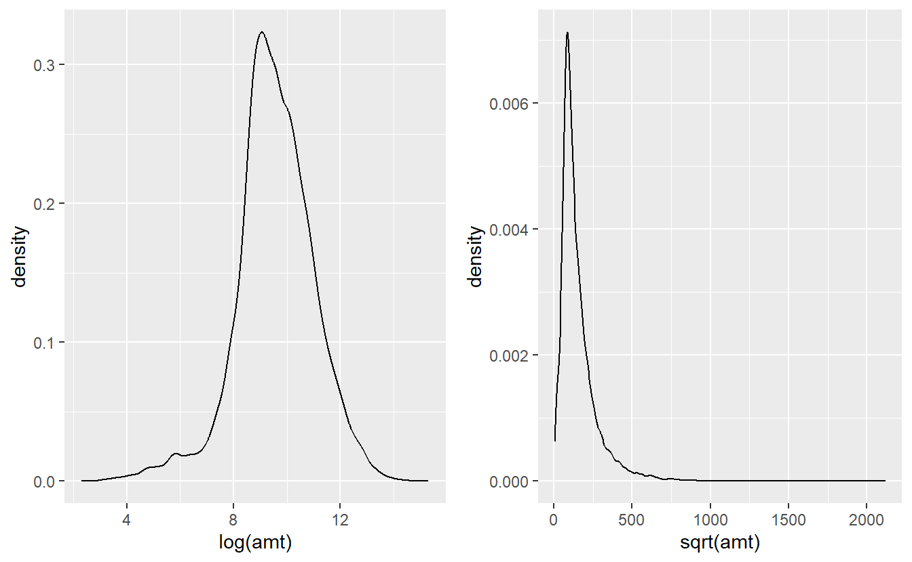
Comparing to the histogram, we can see that the density plots have the same shape as the histograms and can be interpreted in the same way. Do note that the vertical axis of the density plots shows the “density” rather than “count” and the area under a density curve is always 1.
2.2.1.0.4 Boxplots
Besides histograms, \(\fbox{boxplots}\) are also convenient graphical aids to visualize the distribution of a numeric variable.
Boxplots are constructed in ggplot2 by the geom_boxplot() function, which takes the y aesthetic representing the variable of interest (the x aesthetic is optional, but can be added to achieve splitting).
The following code draws a boxplot for each of claim amount and the log of claim amount:
library(ggplot2)
library(gridExtra)
p1 <- ggplot(data=persinj, mapping=aes(y=amt)) +
geom_boxplot()
p2 <- ggplot(data=persinj, mapping=aes(y=log(amt))) +
geom_boxplot()
grid.arrange(p1, p2, ncol=2)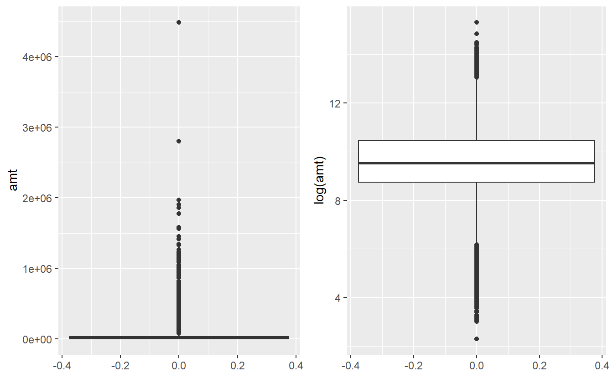
While most of the raw claim amounts are so close that the 25% percentile, median, and 75% percentile all degenerate to the same line, the log transformation corrects for the skewness and re-positions the data points for much easier visual inspection.
Still there are quite a number of “outliers”, which are shown as large dotted points.
Categorical Variables
2.2.1.0.5 Case 1: Given Raw Data (More common in Exam PA)
Descriptive Statistics (Frequency Tables): Categorical variables, even when coded as numbers, do not always have a natural order, so statistical summaries like the mean and median may not make sense. To understand the distribution of categorical variables, we can look at the relative frequency of each of its levels through a frequency table, constructed by the
table()function in R.Graphical Displays (Bar Charts): When the number of levels of a categorical variable increases, a frequency table becomes more and more difficult to read. In most cases, the frequencies per se are not that important; what truly matters is their relative magnitude. In this regard, bar charts extract the information in a frequency of each level in the variable. Looking at a bar chart, we can easily tell which levels are the most popular and which ones have minimal observations.
The persinj data set has two categorical variables, injury code (inj) and legal representation (legrep). Recall from Table 2.1 that inj has seven levels, while legrep is binary.
In the following code, we make two frequency tables for inj, one showing the raw counts, and one showing the percentage counts of the seven levels of inj.
table(persinj$inj)
#>
#> 1 2 3 4 5 6 9
#> 15638 3376 1133 189 188 256 1256
table(persinj$inj)/nrow(persinj)
#>
#> 1 2 3 4 5 6
#> 0.709657 0.153204 0.051416 0.008577 0.008531 0.011617
#> 9
#> 0.056998We can see that the predominant group of injuries is hose of injury code 1, followed by codes 2, 9 and 3. The other three groups have minimal observations.
The numbers in a frequency table can be depicted in a bar chart created in ggplot2 by the \(\fbox{geom_bar()}\) function, which takes the x aesthetic representing the categorical variable of interest and produces a bar proportional to the number of observations for each level of the variable.
The following code produces two bar charts for injury code corresponding to the two frequency tables in the last code chunk:
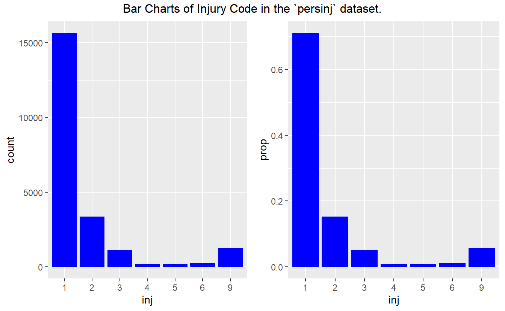
2.2.1.0.6 Case 2: Given Summarized Data
In real applications, it is not uncommon that the data we have has been grouped, or summarized in some form in advanced, to make it more manageable.
In the case of the persinj data set, instead of having the information for each individual claim, the data may have already been grouped by certain categorical variables, such as inj code.
The code below produces a version of persinj data, called persinj_by_inj, that shows the number of observations for each level of inj. The code involves the tidyverse package, which was featured in some past PA exams. Instead of worrying about the somewhat convoluted code syntax, pay attention to the output, which is far more important in the new exam format.
#install.packages("tidyverse")
library(tidyverse)
persinj_by_inj <- persinj %>%
group_by(inj) %>% # grouped by inj
summarize(count=n()) # count the no. of obs. for each level of inj
persinj_by_inj
#> # A tibble: 7 × 2
#> inj count
#> <fct> <int>
#> 1 1 15638
#> 2 2 3376
#> 3 3 1133
#> 4 4 189
#> # ℹ 3 more rowsThe output shows, for example, that there are 15,638 observations with an injury code of 1, consistent with the frequency table previously produced.
If all we have is the persinj_by_inj data set (we no longer have access to the original persinj data set), how can we display the counts for each injury code?
The geom_bar() function will not work well. If we map the inj variable to the x aesthetic of the geom_bar() function, then the function will keep track of how many times each distinct value of inj has occurred. It will treat inj as a variable with 7 distinct values {1, 2, 3, 4, 5, 6, and 9}, each of which appears once and only once, which is definitely not what we want.
Instead, the \(\fbox{geom_col()}\) function will suit our purpose. When inj is mapped to the x aesthetic and count to the y aesthetic, the function will display the counts for each value of inj, as the following code shows:
p1 <- ggplot(data=persinj_by_inj, mapping=aes(x=inj, y=count)) +
geom_col(fill="blue")
grid.arrange(p1, ncol=1)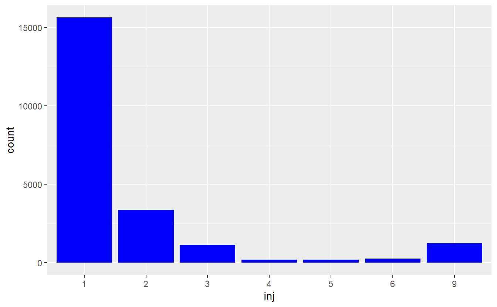
This bar chart is identical to the one in the left panel of Figure 2.2.6 based on the original version of the persinj data set.
In summary:
- The
geom_bar()function is for visualizing the distribution of a categorical variable given individual (raw) data, while thegeom_col()function is for the same purpose, given grouped (summarized) data.
2.2.2 Bivariate Data Exploration
Data exploration becomes even more intriguing and challenging when two or more variables are analyzed together rather than in isolation. This has the important advantage of revealing relationships, patterns, and outliers which become apparent only when variables are considered in combination with one another.
This subsection therefore focuses on bivariate data exploration, where pairs of variables are investigated either numerically or graphically to identify potentially interesting relationships that can provide useful input for a predictive model.
Of particular interest is the relationship between the target variable and each predictor variable in a given setting.
There are three types of bivariate combinations, depending on the type of variables being examined:
Case 1: Numeric vs. Numeric
Descriptive Statistics: An easy way to summarize the linear relationship between two numeric variables is through the correlation coefficient, or simply correlation,which is a unit-free metric on a scale from -1 to +1.
- Case 1: If the correlation is +1, then the two variables are perfectly positively correlated.
- Case 2: If the correlation is 0, then the two variables are uncorrelated.
- Case 3: If the correlation is -1, then the two variables are perfectly negatively correlated.
These extreme correlation values almost never arise in real data sets, but they provide useful benchmarks for judging the size of a typical correlation. The larger the correlation in magnitude (e.g., the closer they are to +1 or -1), the stronger the degree of linear association between the two variables.
In the following code, we use the \(\fbox{cor()}\) function to compute the correlation between the claim amount and operational time, and between the log-transformed claim amount and operational time in the
persinjdata.cor(persinj$amt, persinj$op_time) #> [1] 0.3466 cor(log(persinj$amt), persinj$op_time) #> [1] 0.6071The two variables are moderately positively correlated on the original scale, and the correlation becomes stronger when the claim amount is on the log scale.
As much as correlation is a compact summary of the extent to which two numeric variables move in tandem, it can only capture linear relationships. A zero correlation only means that the two variables are not linearly related, but they may be related in more subtle ways. More complex relationships (e.g., quadratic) can be revealed more effectively by graphical displays.
Exercise 2.2.3 (What can you say about two variables with zero correlation?)
Consider the following data set with two variables:
Determine which of the following statements about the two variables is true:
(A) The correlation between X and Y is positive; they are dependent. (B) The correlation between X and Y is positive; they are unrelated. (C) The correlation between X and Y is zero; they are dependent. (D) The correlation between X and Y is zero; they are unrelated. (E) The correlation between X and Y is negative; they are dependent.
Solution: In the the following code, we compute the (sample) correlation between X and Y.
The zero correlation suggests that X and Y are linearly unrelated. However, the two variables are perfectly dependent via the quadratic relationship \(Y = X^2\). (Answer: (C))
Graphical Displays: The relationship between numeric variables (one of which is usually the target variable) is typically visualized by a \(\fbox{scatterplot}\), where values of the two variables are graphed on a two-dimensional plane, as we saw in Section 2.1.
Such a plot often gives us a good sense of the nature of the relationship (e.g., increasing, decreasing, polynomial, periodic) between the two numeric variables and sometimes yields insights that correlations alone cannot provide. This explains why scatterplots are one of the most commonly used graphical displays in data exploration.
The following code makes two scatterplots, one for claim amount, and one for the log of claim amount, both against operational time (see Figure 2.2.7). We have set
alphato a very small value due to the large number of overlapping observations.Both plots exhibit an increasing relationship, but the scatterplot for the log of claim amount displays a much more conspicuous upward slopping trend, indicating that the log of claim amount is approximately positively linear in operational time. This is a further manifestation of the merits of the log transformation in uncovering relationships that would otherwise be obscure.
p1 <- ggplot(data=persinj, mapping=aes(x=op_time, y=amt)) + geom_point(alpha=0.05) + geom_smooth(method="lm", se=FALSE) p2 <- ggplot(data=persinj, mapping=aes(x=op_time, y=log(amt))) + geom_point(alpha=0.05) + geom_smooth(method="lm", se=FALSE) grid.arrange(p1, p2, ncol=2, bottom="Scatterplots of claim amount (left) and the log of claim amount (right) against operational time in the `persinj` dataset.")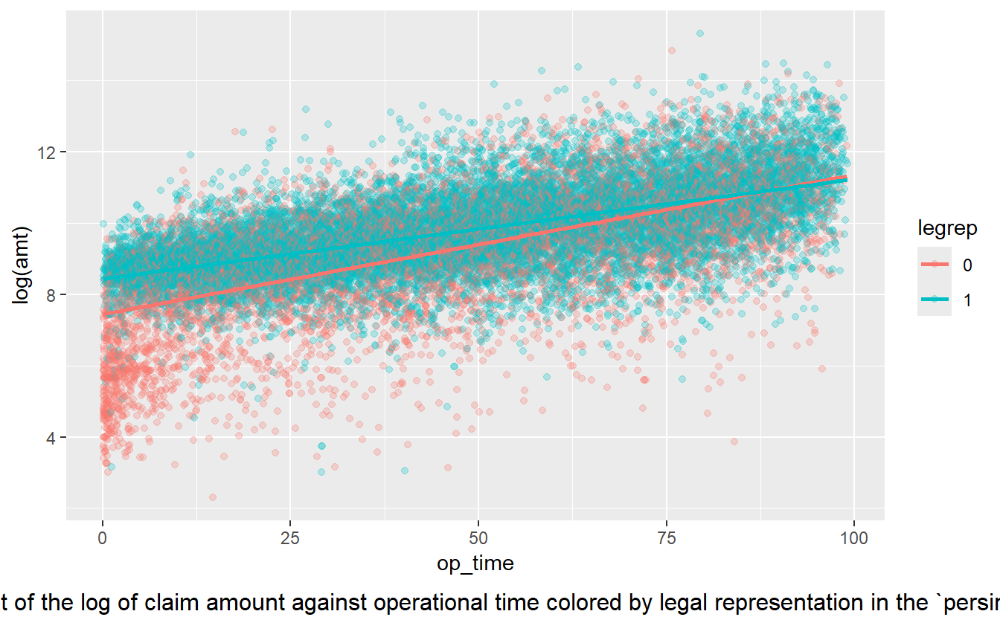
Although a scatterplot itself is confined to depicting the relationship between only two numeric variables, the effect of a third, categorical variable can be incorporated and investigated by corating the observations by color, shape, or other visual elements according to the levels assumed by this third variable.
This way, we can visually inspect the relationship between two numeric variables with the levels of the third, categorical variable. In statistical language, this phenomenon is known as \(fbox{interaction}\), which we will study in Section 3.2, and is an important modeling issue to keep in mind when constructing an effective predictive model.
Now run the following code to make a scatterplot for the log of claim amount against operational time with the observations color-distinguished by legal representation (note that the
coloraesthetic is mapped tolegrep): see Figure 2.2.8.p1 <- ggplot(persinj, aes(x=op_time, y=log(amt), color=legrep)) + geom_point(alpha=0.25) + geom_smooth(method="lm", se=FALSE) grid.arrange(p1, ncol=1, bottom=" Scatterplot of the log of claim amount against operational time colored by legal representation in the `persinj` dataset.")The scatterplot shows that the two smoothed lines corresponding to the two levels of
legrephave markedly different slopes and intercepts (keep in mind that we are on the log scale, so a small change in the intercept and slope can matter a lot on the original scale).In other words, the linear relationship between the log of claim amount and operational time depends materially on whether legal representation is present of not. We can also roughly tell the effect of legal representation on the (log of) claim amount:
Injuries with legal representation (e.g., those with `legrep` = 1) tend to produce higher claim amounts, except when operational time is extraordinarily large (90 or higher), in which case legal representation does not seem to have a noticeable impact on claim amount.In Section 4.2, we will formally assess the extent of interaction and construct a model that properly takes the interaction effect into account.
Case 2: Numeric vs. Categorical
To understand the interplay between a numeric and categorical variable, it is best to investigate the distribution of the former indexed (or “split”) by each possible level of the latter.
In effect, we are looking at the conditional distribution of the numeric variable given different levels of the categorical variable.
- Descriptive Statistics: To summarize the association between a numeric variable and a categorical variable, we can partition the data into different subsets, one subset for each level of the categorical variable, and compute the mean of the numeric variable there. These conditional means varying substantially may suggest a strong relationship between the two variables.
In the code below, we produce a table of the mean of the log-transformed claim amount (it is also fine to use the untransformed claim amount variable) split by the different levels of inj and legrep, which are categorical.
library(tidyverse)
# Partitioned by `inj` code
persinj %>%
group_by(inj) %>%
summarize(
mean=mean(log(amt)),
median=median(log(amt)),
n=n()
)
#> # A tibble: 7 × 4
#> inj mean median n
#> <fct> <dbl> <dbl> <int>
#> 1 1 9.37 9.36 15638
#> 2 2 10.3 10.3 3376
#> 3 3 10.7 10.9 1133
#> 4 4 11.0 11.2 189
#> # ℹ 3 more rows
# Partitioned by `legrep`
persinj %>%
group_by(legrep) %>%
summarize(
mean=mean(log(amt)),
median=median(log(amt)),
n=n()
)
#> # A tibble: 2 × 4
#> legrep mean median n
#> <fct> <dbl> <dbl> <int>
#> 1 0 9.18 9.32 8008
#> 2 1 9.77 9.64 14028It is clear that the claim amount on average increases from injury code 1 to injury code 4, then decreases down to injury code 9. The two means split by legrep are in agreement with what we observed in Figure 2.2.8, which shows that larger claim amounts are associated with the use of legal representation.
Graphical Displays: The conditional distribution of a numeric variable given a second, categorical variable is best visualized by \(\fbox{split boxplots}\), where a series of boxplots of the numeric variable split by the categorical variable are made.
The following code constructs two split boxplots for the log of claim amount, one split by injury code and one split by legal representation (Figure 2.2.9). The categorical variable that is used to split the numeric variable simply enters the x aesthetic and a collection of boxplots of the numeric variable for each level of the categorical variable will be shown. The two boxplots further support the findings based on the summary statistics above, but turn them more powerfully into diagrams.
p1 <- ggplot(persinj, aes(x=inj, y=log(amt))) +
geom_boxplot()
p1 <- ggplot(persinj, aes(x=legrep, y=log(amt))) +
geom_boxplot()
grid.arrange(p1, p2, ncol=2, bottom="Two split boxplots for the log of claim amount, one split by injury code (left) and one split by legal representation (right), in the `persinj` data.")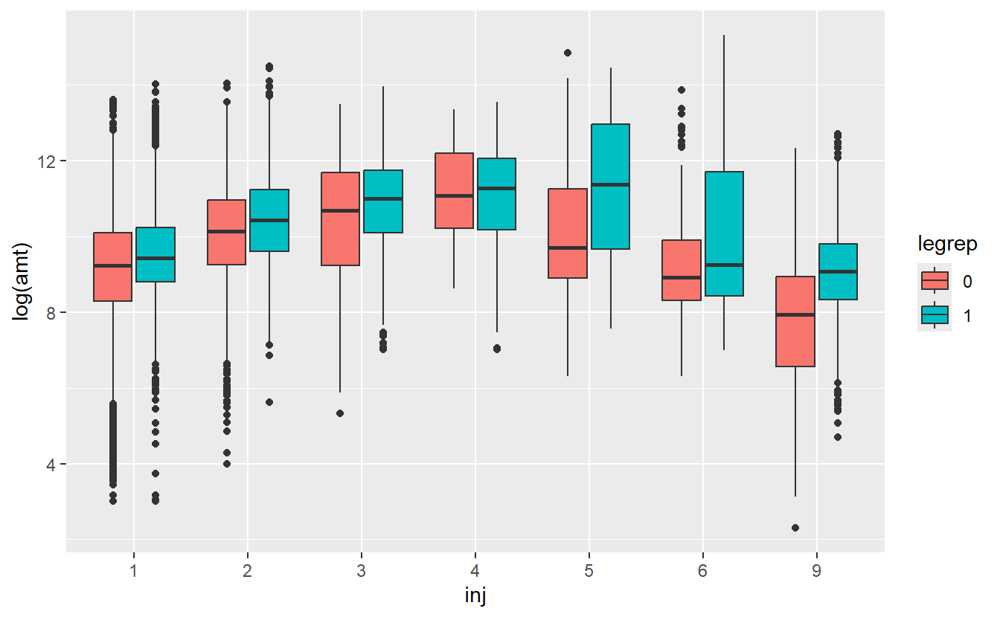
In the following code, we split the log of claim amount by injury code (the x aesthetic), followed by legal representation (the fill aesthetic) within each injury code, to view a three-way relationship (Figure 2.2.10).
Now the effect of legal representation is even more pronounced: Regardless of the injury code, larger claim sizes tend to be injuries with legal representation, with the effect being the most prominent for injuries of code 5 and code 9.
FIGURE 2.1: Boxplots of the log of claim amount split by injury and legal representation in the persinj data.
Although not as effective as split boxplots (in my opinion), histograms can also be adapted to visualize the distribution of a numeric variable split by a categorical variable. They can either be histograms stacked on top of one another (using the fill aesthetic) to highlight the contribution of each categorical level to the overall distribution of the numeric variable, or dodged histograms with each bin placed side by side for comparison (note the argument \(\fbox{position="dodge"}\)).
The following code produces both types of histograms for the log of claim amount split by legal representation (Figure 2.2.11). For the dodged histogram, it is necessary to specify \(\fbox{y=..density..}\) so that the histogram shows the density rather than raw counts; counts are misleading because there are a lot more injuries with legal representation than those without.
Both histograms suggest that larger claims (e.g., those with log(amt) greater than 9) tend to be those with legal representation, as expected.
FIGURE 2.2: Stacked (top) and dodged (bottom) histograms of the log of claim amount in the persinj dataset.
2.2.2.1 Case 3: Categorical vs. Categorical
- Descriptive Statistics: When examining a pair of categorical variables, it is often useful to construct a two-way frequency table showing the number of observations for every combination of the levels of the two variables using the \(\fbox{table()}\) function.
When two arguments are supplied to the table() function, the first argument will correspond to the rows of the two way frequency table, while the second argument will correspond to its columns.
The following code makes a two-way frequency table for the legal representation cross with injury code:
table(persinj$legrep, persinj$inj)
#>
#> 1 2 3 4 5 6 9
#> 0 5571 1152 374 56 85 121 649
#> 1 10067 2224 759 133 103 135 607Graphical Displays: The proportions in a frequency table are useful statistics, but a visual picture often expresses these statistics much more powerfully and makes for easy interpretation, especially when the two categorical variables have a lot of levels. To visualize the distribution of a categorical variable split by another categorical variable effectively, split bar charts can be of use. These charts come in different versions, each one being useful for a certain purpose. The following code produces three bar charts for injury code split by legal representation (see Figure 2.2.12):
- Stacked: The first bar chart has counts within each injury code colored by legal representation because the
fillaesthetic is set tolegrep. In other words, each bar is broken down proportionally into injuries with legal representation (colored in teal) and those without legal representation (colored in red). - Dodged: The second bar chart has counts within each injury code separated according to legal representation and placed side by side for comparison due to the option \(\fbox{position="dodge"}\) in the
geom_bar()function. - Filled: In the third bar chart, the relative proportions (not counts) of injuries with and without legal representation within each injury code are shown due to the option \(\fbox{position="fill"}\) (not to be confused with the
fillaesthetic). This makes it easy to compare proportions across different injury codes, although we lose the ability to see the number of injuries in each code. In predictive modeling, factor levels with more observations are generally considered more reliable than sparse levels.
- Stacked: The first bar chart has counts within each injury code colored by legal representation because the
Although not discussed in the PA modules, filled bar charts are usually the most useful for depicting the interplay between two categorical variables; they are used, for example, in the June 17 and 18, 2020 PA exams and the Hospital Re-admissions sample project. A cursory glance at the filled bar chart in Figure 2.2.12 shows that there is a higher proportion of injuries with legal representation for codes 1 to 4 than for codes 5, 6, and 9.
FIGURE 2.3: Stacked (top left), dodged (top right), and filled (bottom left) bar charts for injury code split by legal representation in the persinj dataset.
2.2.3 End-of-Chapter Practice Problems
2.2.3.1 Problem 2.3.1 (Small Differences in code, large differences in output!)
Consider the personal injury insurance data set again and the following chunks of R commands (which look so similar!):
library(ggplot2)
# read in data
persinj <- read.csv("data/persinj.csv")
# convert categorical variables to factors
persinj$inj <- as.factor(persinj$inj)
persinj$legrep <- as.factor(persinj$legrep)
# CHUNK 1
ggplot(persinj, aes(x=inj, color=legrep)) +
geom_bar()
# CHUNK 2
ggplot(persinj, aes(x=inj, fill=legrep)) +
geom_bar()
# CHUNK 3
#ggplot(persinj, aes(x=inj)) +
# geom_bar(fill=legrep)
# CHUNK 4
ggplot(persinj, aes(x=inj)) +
geom_bar(aes(fill=legrep))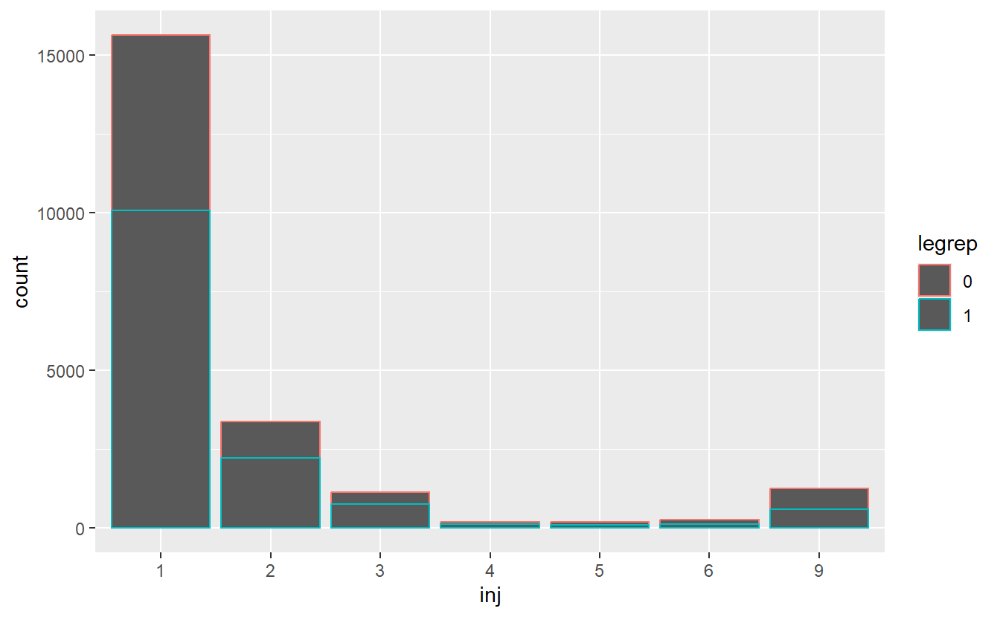 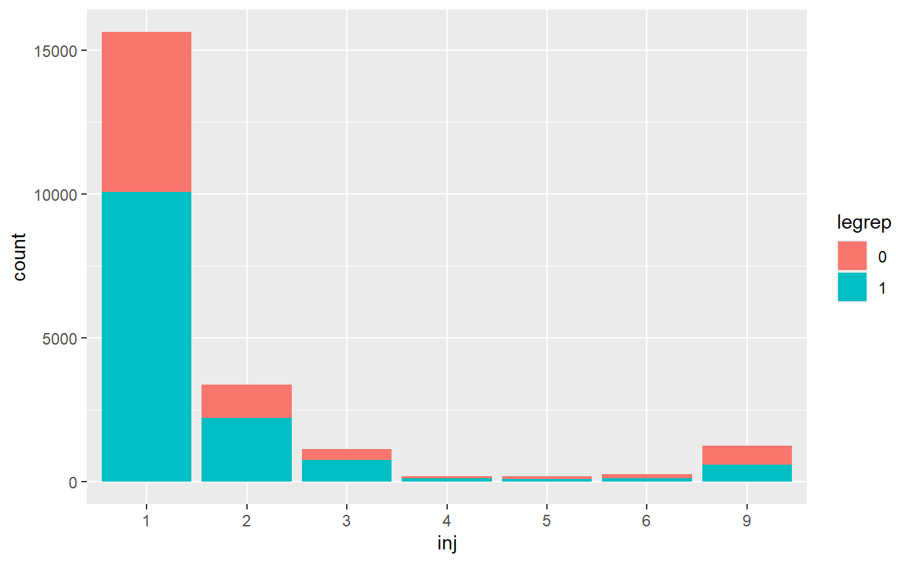
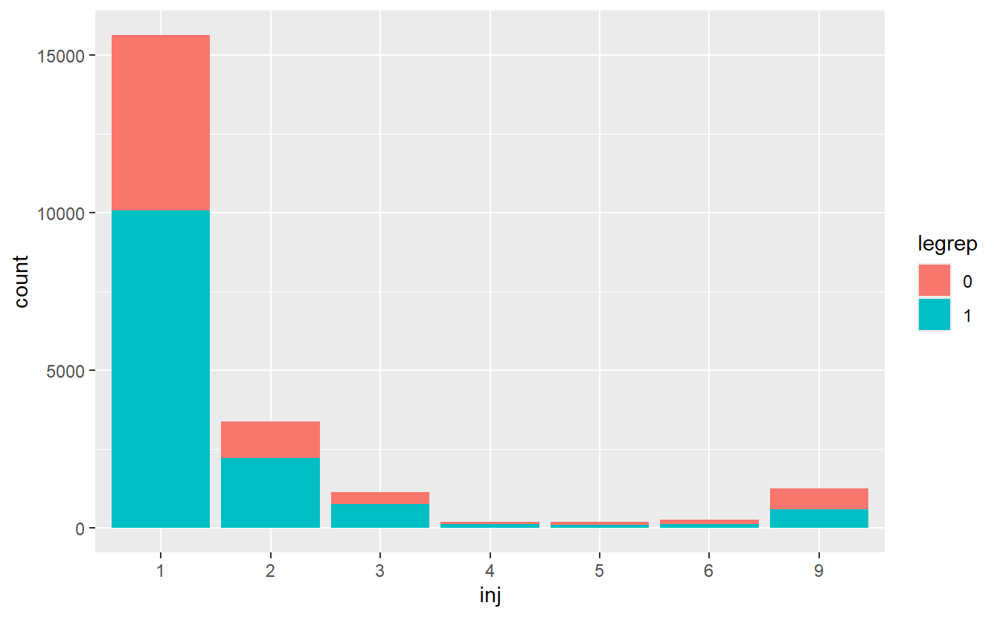
Make a guess of what each chunk of code does. Then run the code in R and see the output.
Solution: Although the four chunks of code look similar, they produce drastically different output:
- CHUNK 1: Here we are making a bar chart for injury code with the boundary (not the interior) of the vertical bars colored according to legal representation. As you can see, the colors are hardly perceptible.
- CHUNK 2: This is similar to CHUNK 1, except that this time it is the interior of the vertical bars that is color-coded according to legal representation. The output is the same as the top left panel of Figure 2.2.12.
- CHUNK 3: This chunk of code does not work (try to run it in R and you will get an error!). The reason is that the
fillargument (notfillaesthetic) of thegeom_bar()function is mapped to a variable (legrephere) instead of a constant (e.g., “blue”). This is the opposite of the mistake discussed in CHUNK 4 of Section 2.1 (Figure 2.1.2). - CHUNK 4: This chunk of code generates the same output as CHUNK 2. Instead of putting the
fillaesthetic in theggplot()call, it is placed inside thegeom_bar()function.
2.2.3.2 Problem 2.3.2 (Data Exploration: Univariate and Bivariate)
The ggplot2 package comes with a data set named diamonds that contains the prices and other attributes of approximately 54,000 diamonds. To load the data set, use the following commands:
(a) Determine the number of observations and variables in the diamonds data set.
With the aid of appropriate graphical displays and/or summary statistics, complete the following sub-tasks.
(b) Perform univariate exploration of the price of diamonds (price) and the quality of the cut (cut). Determine if any of these two variables should be transformed and, if so, what transformation should be made. Do your recommended transformation(s), if any, and delete the original variable(s). (c) Explore the relationship between the price of diamonds and the weight of diamonds (carat). (d) Explore the relationship between the price of diamonds and the quality of the cut. (e) Reconcile the apparent contradiction between what you get in parts (c) and (d).
Solution:
(a) The number of rows in the diamonds data set can be obtained by the nrow() function:
To get the number of variables, we can first extract the column names of the data set via the colnames() function, then apply the length() function to calculate its length:
More efficiently, we can apply the dim() function to diamonds to get both of its row and column dimensions:
(b) The price variable is a (positive and technically continuous) numeric variable. Let’s use the summary() function to learn more about its numeric statistics:
The variable ranges from 326 to 18,823 and its mean is much higher than its median, an indication of its pronounced right skewness. This is confirmed by the histogram below:
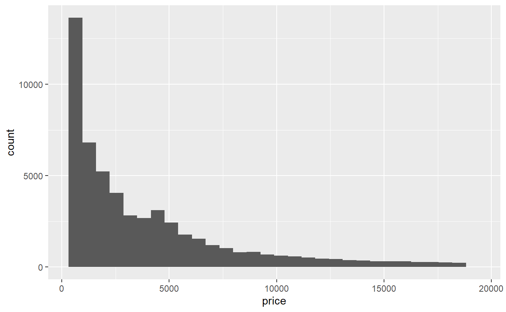
To deal with the right skewness of price, we can use a log transformation. The following commands create a log-transformed price and delete the original price variable (recall what you learned in Section 1.3).
The resulting histogram shows that the distribution of the log-transformed price is closer to symmetric, although it is not bell-shaped.
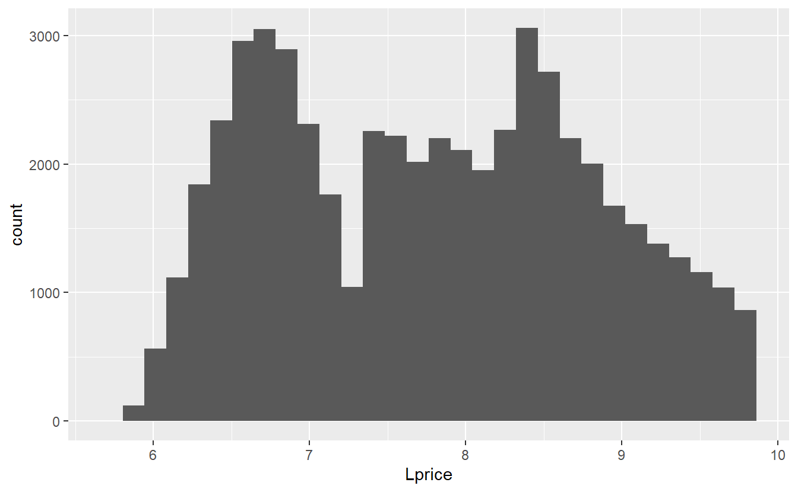
() For both histograms, you can experiment with different values of the bins parameter.
The cut variable is a 5-level categorical veriable, its levels are "Fair", "Good", "Very Good", "Premium", and "Ideal".
#> [1] "Fair" "Good" "Very Good" "Premium"
#> [5] "Ideal"The following table shows the counts and percentage for each level:
#>
#> Fair Good Very Good Premium Ideal
#> 1610 4906 12082 13791 21551
#>
#> Fair Good Very Good Premium Ideal
#> 0.02985 0.09095 0.22399 0.25567 0.39954The number of observations increases from “Fair” to “Ideal”. About 40% of the diamonds are of “Ideal” quality.
Since cut is a categorical variable, numeric transformations such as the log-transformation are not applicable and so we would prefer to leave it as it is.
(c) Because Lprice and carat are both numeric variables, a scatterplot for the two variables is appropriate for exploring their relationship. The scatterplot shows that the two variables are strongly positively related; the heavier the diamond, the more expensive it is, conforming to our intuition.
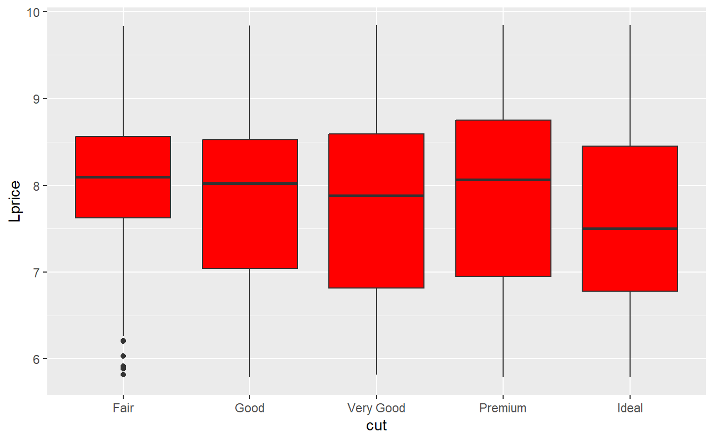
Remark.
You can add the
alphaargument to thegeom_point()function to reduce the amount of overlapping.If you plot
Lpriceagainst the log ofcarat, the resulting relationship is very close to linear.
(d) As cut is a categorical variable, a split boxplot for Lprice broken by the levels of cut is appropriate for exploring their relationship. The split boxplot, however, suggests the counter-intuitive idea that diamonds of a higher quality tend to be cheaper (though only slightly). How can this be the case?
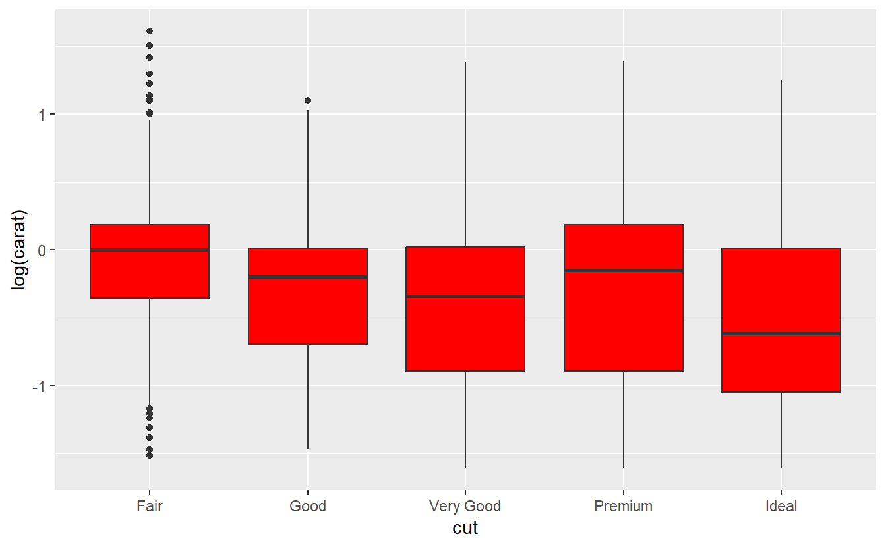
(e) To reconcile the contradiction between parts (c) and (d), one can look at the relationship betwen carat and cut. Again, as carat is numeric and cut is categorical, a split boxplot for carat split by cut will serve our purpose:

The split boxplot shows that the weight of a diamond tends to drop as the quality of the cut becomes higher (“Premium” is an exception). According to part (c), the carat is an important predictor of Lprice, so the findings in part (d) may be a result of the negative relationship between carat and cut – higher quality diamonds may be less pricey because they weigh less.